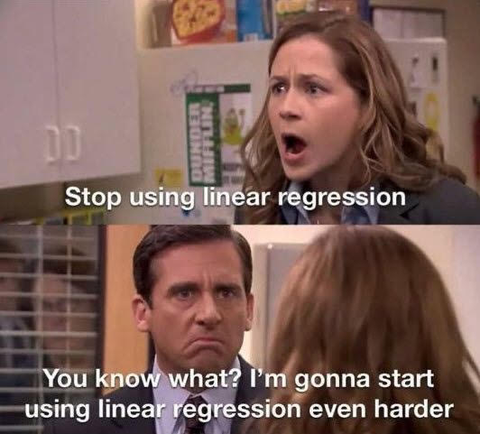

Time Series First Principles Series
This post dives into the seventh principle of a good time series forecast, simple models are better models. Check out the initial post in this series to get a high level view of each principle.
- Domain Expertise
- Garbage In Garbage Out
- The Future Is Similar To The Past
- Higher Grain Higher Accuracy
- Order Is Important
- The Magic Is In The Feature Engineering
- Simple Models Are Better Models
- Capture Uncertainty
- Model Averages Are King
- Deep Learning Last
Occam’s ML Model Razor
William of Ockham was a 14th-century English Franciscan friar, philosopher, and theologian. In his work he preached that for most things in life the simplest explanation is the correct one. I’ve learned this inadvertently in my life many times. For example, when I was studying for the ACT in high school a teacher told me that on the english questions it’s usually the shortest answer that is often correct. You could get a decent score just by following this one rule, even if you couldn’t read or speak english. This one tip saved my ass more than I’d like to admit, and I could read and speak english. Or so I thought.
Often in life, just like the ACT english section, it’s usually the simplest approaches that provide the best results. You can hire a fitness coach and buy all the supplements in the world but you’ll probably get similar results following a handful of simple exercise and eating tips. The same applies in the world of machine learning. The more complexity you add to your data and models, the less likely they are going to be useful in the end. Let’s walk through how simplicity helps in all aspects of machine learning, from the data you use all the way down to models you train.
More Features, More Problems
In the world of time series forecasting, there are so many ways we can do feature engineering. Learn more about feature engineering in a previous post. A dataset containing two columns, a date and value column, can be transformed into 100+ new features. This can easily get out of hand once we add external regressors (outside variables like consumer sentiment or inflation data) and create new features from them.
Each feature you add to a dataset hurts your model in multiple ways.
- Train Time: It can slow down model training, meaning it will take longer to train the model. This may not seem like a big deal with small datasets but once you start having tens of thousands of rows in a dataset, adding a new feature can really slow things down.
- Overfitting: Adding more features can lead to overfitting, meaning your model might be very accurate on the data it was trained on but cannot generalize well to unseen data in the future. Your model will learn from the noise in the data instead of the signal.
- Interpretability: Adding more features makes it harder to explain the model’s predictions. If you can’t explain your forecast to non-technical business partners, then the forecast may not be used by anyone. I’ve seen this countless times in my work. An accurate model doesn’t help anyone if the end user ultimately wants to know how the prediction was created. More on that in this post.
Feature Selection
One way to simplify your data before model fitting is to implement a feature selection process. It’s called selection but it’s more like removal, where we drop any features that do not contribute to a model that can generalize well to new data. Here are a few techniques for feature selection.
- Domain Expertise: Remove features that don’t make sense to you as a human. For example, the annual rain fall in Iceland might be perfectly correlated to Coca Cola sales in South America, but it doesn’t pass our smell test of being a factor that impacts the business. When in doubt take it out.
- Correlation: If a feature has a strong correlation to the target variable (what we want to forecast) then we keep it in, but only after it passes our domain knowledge smell test.
- Model Specific: Some models, like certain flavors of linear regression, have built in feature selection or feature importance. We can use that info to remove features and can then retrain on any kind of ML model.
There are many other methods for feature selection, but are out of the scope of this post. The ones called out above are a good starting point.
Simple Models
Simplifying our data is helpful, but sometimes simplifying our models is even better. When starting a new forecast project, you might feel tempted to go out and build an advanced deep learning model, using all of the latest bells and whistles. That model may show promising results, but often a simpler model like linear regression can get the same or even better results. Models like linear regression are faster to train and have better model interpretability.

We can even go one level deeper and not use any features at all. Univariate statistical models like ARIMA or exponential smoothing are classic time series forecasting models that only need one column of data, the historical values of your target variable. That’s what makes them univariate (one variable). They have built in feature engineering under the hood that allows them to learn from historical trends and seasonality in the data, so no additional work is needed to create features. Often in time series forecasting competitions a large team of deep learning researchers can just barely beat a single person team who uses simple models like ARIMA or random forest models. More on that in a future post.
finnts
My forecasting package, finnts, has built in feature selection and other techniques to ensure simple models are built in ways that produce accurate forecasts. Check out the package and see for yourself.
Final Thoughts
Ultimately, the goal of any forecasting model is to provide clear, accurate, and quick results. Simpler models often meet these criteria better than complex ones because they’re easier to understand, faster to run, and just as accurate. By focusing on simplicity and minimizing inputs, we ensure that our forecasts are not only effective but also user-friendly. This approach doesn’t just save time; it makes the insights gained from the data accessible to everyone involved in the decision-making process. Simplicity, therefore, isn’t just a principle; it’s a practical strategy for better forecasting.